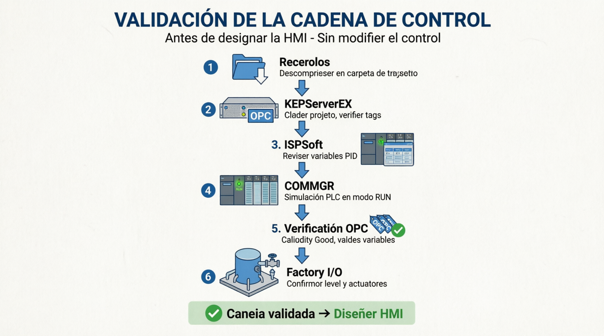
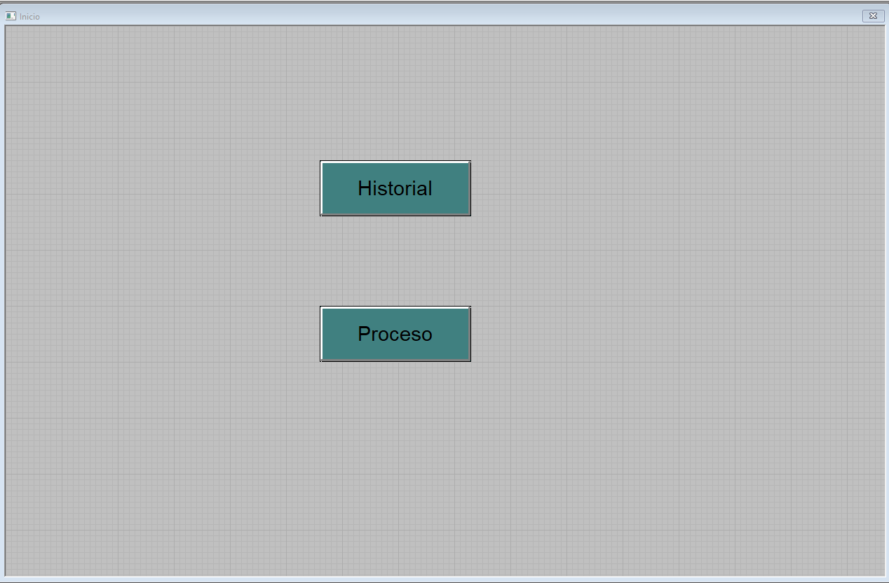
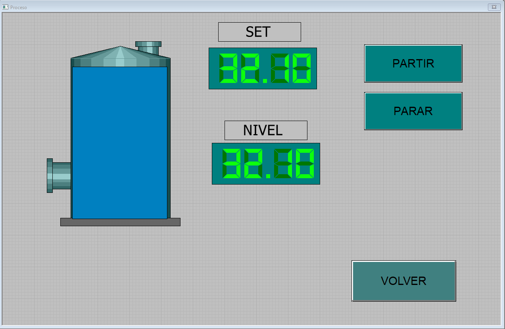
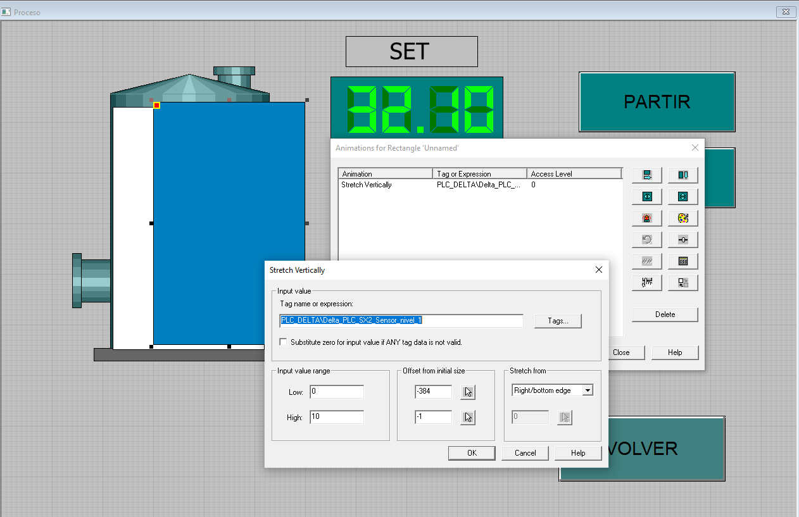
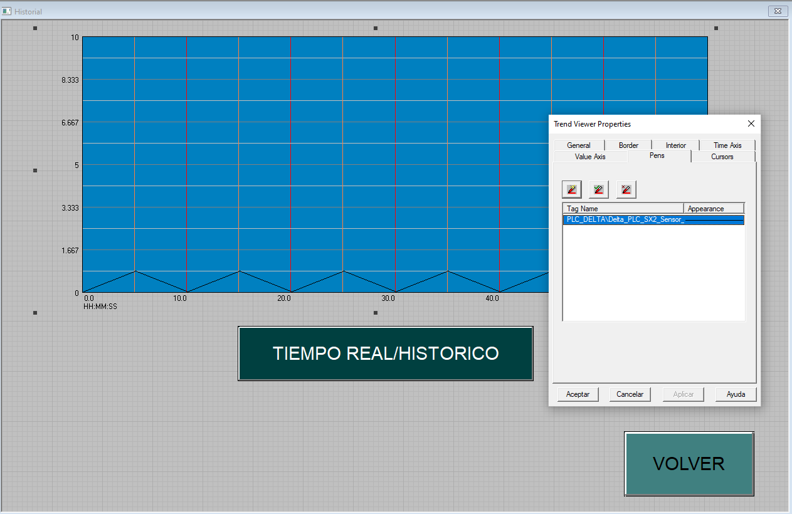
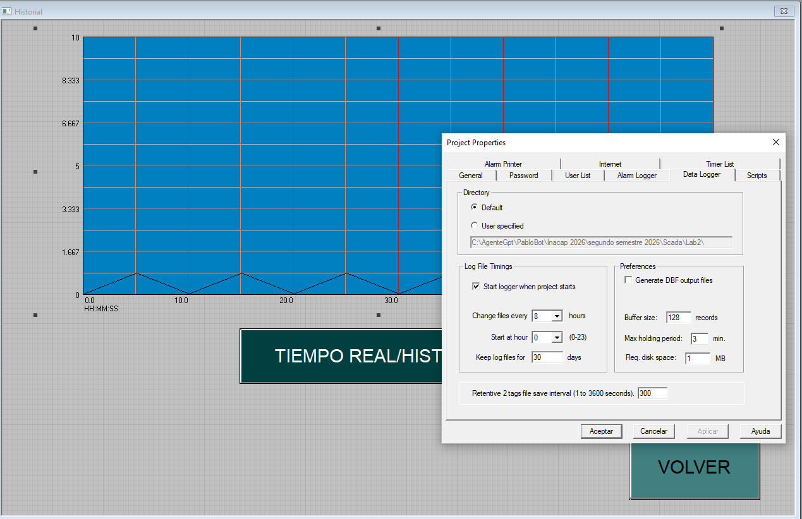

Guía de laboratorio: manejo de señales analógicas en INFILINK
Supervisión de nivel, animación de proceso y análisis de respuestas PID
Aprendizaje esperado
Configurar una interfaz HMI en INFILINK para supervisar una variable analógica de nivel, representar visualmente el proceso, registrar su evolución temporal y analizar el efecto de diferentes parámetros de un controlador PID.
Producto de la actividad: proyecto INFILINK con tres ventanas operativas, navegación funcional, estanque animado y Trend View con registro histórico; más un análisis técnico de tres ensayos PID.
Recursos entregados
Video 1 — Puesta en marcha de la simulación
Observa el procedimiento completo antes de iniciar: carga del proyecto KEPServerEX, apertura del programa en ISPSoft, simulación mediante COMMGR y ejecución de la escena en Factory I/O.
Software requerido
- ISPSoft y COMMGR.
- KEPServerEX con el proyecto y tags suministrados.
- Factory I/O con la escena del estanque analógico.
- INFILINK HMI Design Mode V6.
Parte 1. Pon en marcha la simulación
En esta etapa no se modifica el control. El propósito es comprobar la cadena completa antes de diseñar la HMI.
Descarga y descomprime todos los recursos en una carpeta de trabajo. Evita ejecutar los proyectos directamente desde un archivo comprimido.
Abre KEPServerEX y carga el proyecto entregado. Verifica que existan el canal, el dispositivo y los tags. No cambies sus nombres, porque INFILINK utilizará esas rutas OPC.
Abre el proyecto en ISPSoft. Revisa la tabla de símbolos y localiza las variables analógicas principales: referencia, nivel medido, salida del controlador y ganancias PID.
Configura COMMGR con el driver de simulación correspondiente al proyecto. Inicia la simulación del PLC y descarga el programa al PLC simulado. Deja el programa en modo RUN.
Comprueba la comunicación OPC. En KEPServerEX observa la calidad y variación de los tags. La calidad debe ser Good; un valor numérico inmóvil no demuestra por sí solo que toda la cadena esté funcionando.
Abre Factory I/O, carga la escena entregada, selecciona el driver configurado para la práctica e inicia la simulación. Confirma que el nivel y los actuadores responden al programa del PLC.

| ✓ | Verificación previa a INFILINK | Evidencia observable |
|---|---|---|
| □ | PLC simulado en RUN | Monitoreo activo en ISPSoft. |
| □ | Servidor OPC operativo | Tags con calidad Good y valores coherentes. |
| □ | Proceso en ejecución | El estanque de Factory I/O llena o vacía según el control. |
Parte 2. Construye la interfaz en INFILINK
Crea un proyecto nuevo y define una resolución común para todas las ventanas. La interfaz tendrá tres ventanas: Principal, Proceso e Historial.
Video 2 — Construcción del proyecto en INFILINK
Utiliza el video como apoyo para crear el proyecto, vincular los tags OPC, construir las tres ventanas y configurar la animación y el registro histórico.
2.1 Comunicación y tags OPC
- En INFILINK, crea un grupo de tags de tipo OPC.
- Selecciona el servidor KEPServerEX instalado mediante el explorador. Para KEPServerEX 6, normalmente se presenta como
Kepware.KEPServerEX.V6. - Navega por el servidor y vincula los tags entregados. Evita escribir manualmente la ruta si está disponible el navegador OPC.
- Comprueba que el tipo de dato de cada tag corresponda al configurado en KEPServerEX.
| Tag INFILINK | Item OPC | Tipo / rango | Uso en la HMI |
|---|---|---|---|
| Nivel_PV | Completar: Canal.Dispositivo.Tag | Analógico: ____ a ____ | Animación, indicador y tendencia |
| Nivel_SP | Completar | Analógico: ____ a ____ | Referencia del controlador |
| Salida_PID | Completar | Analógico: ____ a ____ | Acción de control |
| Kp / Ki / Kd | Completar | Numérico | Identificación de cada ensayo |
2.2 Ventana 1 — Principal
Diseña una portada funcional, no una segunda pantalla de proceso. Debe incluir nombre de la experiencia, identificación del sistema, estado general de comunicación y botones de navegación.
- Botón Proceso: abre la ventana de animación.
- Botón Historial: abre la ventana de tendencias.
- Botón Salir: finaliza el modo de ejecución, si el docente lo autoriza.

2.3 Ventana 2 — Animación del proceso
- Abre Library Manager, carga la biblioteca del sistema y selecciona un estanque apropiado.
- Inserta el estanque y superpone un rectángulo que represente el líquido dentro de su zona útil.
- Selecciona el rectángulo y configura Animations → Stretch Vertically.
- Asocia
Nivel_PV, ingresa su rango mínimo y máximo y selecciona crecimiento desde el borde inferior (Right/bottom edge). - Añade un indicador numérico con unidad y, si corresponde, una entrada o visualizador para
Nivel_SP. - Agrega navegación hacia Principal e Historial.


2.4 Ventana 3 — Trend View e historial
- Inserta un objeto Trend y asígnale un nombre reconocible, por ejemplo
Trend. - Configura el eje vertical con el rango de ingeniería del nivel. Configura un intervalo temporal suficiente para observar llenado, sobreimpulso y estabilización.
- Define y registra los valores de Time Span y Refresh Rate. El primero determina cuánto tiempo se observa; el segundo, con qué frecuencia se actualiza el gráfico.
- Añade como mínimo dos pens:
Nivel_SPyNivel_PV. Si el rango lo permite, añadeSalida_PID; de lo contrario, utiliza un segundo Trend o una escala adecuada. - Asigna colores contrastantes y agrega una leyenda con nombre y unidad de cada señal. Anota por qué esos colores permiten diferenciar correctamente SP, PV y, si corresponde, la salida PID.
- Activa Enable Historical Display.
- Habilita el registro de los tags requeridos (Log Data / Log on data change) y configura el Data Logger para iniciar con el proyecto.
- Agrega controles de Tiempo real, Histórico, retroceso, avance y retorno a Principal.


| Time Span utilizado | |
|---|---|
| Refresh Rate utilizado | |
| Rango del eje vertical | |
| Colores de las pens y justificación |
Lista de cotejo del proyecto HMI
| ✓ | Criterio | Comprobación |
|---|---|---|
| □ | Tres ventanas diferenciadas | Navegación correcta, sin ventanas duplicadas. |
| □ | Tags OPC válidos | Valor y calidad coherentes durante Run Mode. |
| □ | Variable analógica animada | Nivel gráfico y valor numérico coincidentes. |
| □ | Tendencia legible | SP y PV identificables, con escalas y unidades. |
| □ | Histórico funcional | Es posible retroceder y revisar datos registrados. |
Parte 3. Experimentación y análisis en INFILINK
Realiza tres ensayos con el mismo cambio de referencia y las mismas condiciones iniciales. Solo deben variar las ganancias del controlador. El objetivo no es programar nuevamente el PID, sino utilizar INFILINK para observar, registrar, comparar y fundamentar el comportamiento dinámico.
3.1 Condiciones comunes de ensayo
| Condición inicial | Ej.: nivel inicial 20 % |
|---|---|
| Cambio de referencia | Ej.: de 20 % a 70 % |
| Duración por ensayo | |
| Time Span del Trend | |
| Refresh Rate |
3.2 Ganancias de los tres ensayos
| Ensayo | Kp | Ki | Kd | Resultado esperado |
|---|---|---|---|---|
| 1 — No sintonizado A | Respuesta deficiente para reconocer y justificar. | |||
| 2 — No sintonizado B | Respuesta deficiente diferente del ensayo 1. | |||
| 3 — Sintonizado | Mejor compromiso según los criterios del proceso. |
3.3 Procedimiento de registro
- Confirma que el Data Logger esté activo y que el Trend muestre
Nivel_SPyNivel_PV. - Ingresa las ganancias del ensayo y devuelve el proceso a la condición inicial definida.
- Aplica el cambio de referencia en un instante claramente identificable.
- Espera hasta que la respuesta se estabilice o hasta completar el tiempo establecido.
- Registra hora de inicio y término, completa la tabla y toma una captura independiente de la tendencia antes de cambiar las ganancias.
- Repite el procedimiento para los tres conjuntos de ganancias.
3.4 Resultados obtenidos
| Ensayo | Tiempo de subida | Sobreimpulso | Oscilación | Tiempo de establecimiento | Error estacionario |
|---|---|---|---|---|---|
| 1 | |||||
| 2 | |||||
| 3 |
3.5 Preguntas de profundización
1. ¿Qué información aporta el Trend View que no puede obtenerse mirando solamente la animación del estanque?
2. Compara los ensayos 1 y 2. ¿Qué diferencias observas en rapidez, sobreimpulso, oscilación y error estacionario? Fundamenta con datos del gráfico.
3. ¿Por qué la respuesta sintonizada se considera superior? Indica al menos dos criterios medibles; no respondas solo “porque es más estable”.
4. Explica qué efecto observaste al variar Kp, Ki y Kd. Relaciona cada parámetro con una característica visible en la tendencia.
5. ¿Qué consecuencias tendría configurar incorrectamente el rango del tag o del eje vertical en INFILINK, aunque el programa del PLC estuviera funcionando bien?
6. ¿Por qué el registro histórico es relevante en una aplicación domótica real, por ejemplo en un estanque domiciliario o de un edificio?
7. Si la calidad OPC fuera Bad o la tendencia quedara congelada, propone una secuencia de diagnóstico desde INFILINK hasta Factory I/O.
8. Formula una mejora para la ventana de proceso o historial que ayude a un operador a tomar decisiones, sin modificar el programa PLC.
9. El Trend muestra PV en tiempo real, pero al cambiar al modo histórico no aparecen datos anteriores. ¿Qué configuraciones de INFILINK revisarías y en qué orden?
Entrega
| Proyecto INFILINK | Carpeta completa y ejecutable, con tres ventanas, navegación, tags, animación y Trend histórico. |
| Evidencias | Seis capturas legibles: ventana Principal, animación del Proceso, ventana Historial y respuestas PID 1, 2 y 3. Cada respuesta PID debe estar identificada con sus ganancias. |
| Análisis | Tabla de resultados y respuestas fundamentadas mediante observaciones del Trend. |